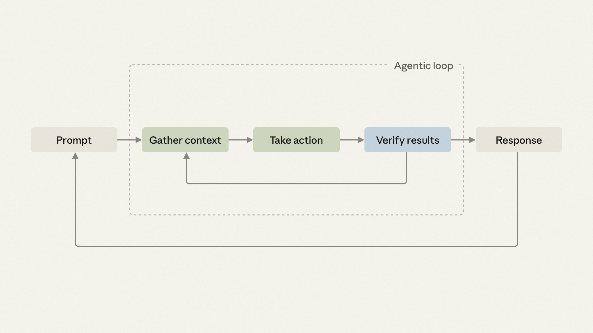

대부분의 에이전틱 코딩 세션은 하나의 루프를 따른다. 변경을 요청하면 Claude가 맥락을 모으고, 행동을 취하고, 결과를 검증한 뒤, 필요하면 맥락을 더 모으려고 다시 루프를 돈다.
검증(verification)은 에이전트가 응답하기 전에 자기 작업을 확인하는 방식이다. Claude는 코드베이스 안의 결정론적(deterministic) 신호—타입 체커, 린터, 테스트, 런타임 오류—를 관찰해 이미 어느 정도는 이 일을 스스로 해낸다. Claude가 추론할 수 없는 부분은 사람이 직접 기능을 수동으로 확인하는 단계로 남는다.
하지만 이런 수동 단계는 검증 루프로 바꿀 수 있다. Claude Code에서 검증 루프란 Claude가 작업을 확인하고 고치려 시도하는 반복적인 과정을 말한다.

이 글에서는 가장 흔한 검증 루프의 유형을 다루고, Anthropic 내부에서 실제로 쓰는 방식을 보여준다. 그런 다음 이미 손으로 하고 있는 수동 확인 작업을 스킬로 어떻게 인코딩하는지 보여준다. 그러면 Claude가 스스로 피드백 루프를 닫는 동안, 다른 일을 하러 갈 수 있다.
커스텀 검증 루프를 설계하기 전에, Claude가 이미 여러 종류의 검증 루프를 위해 기본으로 지원하는 것들을 이해해 두면 도움이 된다. 흔히 쓰이는 기능과 접근 방식은 다음과 같다.
이미 진행 중인 프로젝트가 있고, Claude가 새 기능을 구현할 때마다 매번 똑같은 사소한 수정을 하고 있다는 걸 알아차렸다면, 그 단계들을 여러분만의 커스텀 검증 루프로 바꿀 때다. 첫 단계는 매번 하고 있는 일을 전부 적어 보는 것이다.
새 프로젝트를 시작하면서 그 프로젝트가 어떻게 동작해야 하는지 파악해야 할 때도 마찬가지다. 입사 첫날 새 팀원에게 건네주듯, 모범 사례 버전을 평범한 문장으로 적어 보라.
검증 항목 자체를 말로 표현하기 어렵다면, 먼저 Claude에게 모범 사례를 물어보고 거기서부터 고쳐 나가라. 여러분의 버전은 몇 가지 구체적인 지점에서 다를 텐데, 그 차이야말로 정확히 포착해야 할 부분이다.
반복적인 단계를 검증 루프로 인코딩하는 가장 흔한 방법은 스킬로 작성하는 것이고, 스킬을 만드는 가장 빠른 방법은 skill-creator 플러그인을 설치해 Claude가 인터뷰하도록 맡기는 것이다.
예시:
/skill-creator Create a skill for verifying frontend changes end-to-end. Interview me about my workflow.프로젝트의 .claude/skills/ 안에 마크다운 파일을 직접 두는 방식으로 스킬을 손수 작성할 수도 있다. 가장 단순한 검증 스킬은 몇 줄짜리 프런트매터(frontmatter)와 본문이 전부다.
# .claude/skills/verify-log-hygiene/SKILL.md
---
name: verify-log-hygiene
description: Check that error logs include the request ID and never
include the request body. Use when the diff touches error handling
or logging.
allowed-tools: [Read, Edit, Grep]
---
Read the error-handling paths in the current diff.
For each log call on an error path, confirm it includes the request ID
and does not pass the request body, headers, or any user-supplied payload.
Report each violation with file:line, then fix it: add the request ID
where it's missing and strip the payload from the log call.전체 스키마와 그 배경 철학은 스킬 구축 완전 가이드에 있다.
다음으로 정할 것은 검증 루프가 어떻게 시작되는가다. 독립 실행(standalone)형인지, 내장(embedded)형인지, 연쇄(chained)형인지, 아니면 PR에 묶는지.
결과물이 이미 존재한 다음, 의도적으로 직접 호출하는 방식이다. 독립 실행형 스킬은 매번 적용되지는 않는 교차 관심사(cross-cutting) 검사—커밋 전 보안 스캔, PR 전 접근성 감사, 저장소 전체의 라이선스 헤더 검증—에 제자리를 찾는다. 여러 워크플로우에서 두루 쓰고 싶지만 모든 코드 변경마다 자동으로 실행되기를 원하지는 않는 것들이다.
비용은 매 호출마다 여러분이 직접 그 턴을 기억해서 실행해야 한다는 점이다. 독립 실행형에서 벗어날 때가 됐다는 신호는, 변경할 때마다 매번 그것을 실행하고 있음을 깨닫는 순간이다. 그 지점에 이르면 그 절차는 영구적인 자리를 얻을 자격이 있다. 내장하거나 연쇄시켜라.
결과물을 만들어 내는 스킬의 일부로 자동으로 실행된다. 검사는 특정 워크플로우 하나에 속하고, 그 워크플로우는 이제 여러분이 요청하지 않아도 검사를 실행한다.
가장 단순한 형태는 결과물을 만드는 스킬 본문에 한 줄을 덧붙이는 것이다.
# .claude/skills/scaffold-component/SKILL.md
---
name: scaffold-component
description: Scaffold a new React component under src/components/, including the component file, its co-located test, and an index export. Use when the user asks to create a new component.
allowed-tools: [Read, Write, Edit, Bash, Glob]
---
# Scaffold a new React component
Given a component name (PascalCase), create the following under `src/components/<Name>/`:
1. `<Name>.tsx`: function component with a typed props interface and a default export.
2. `<Name>.test.tsx`: React Testing Library test that renders the component and asserts it mounts without throwing.
3. `index.ts`: re-export the default and any named exports.
Follow the patterns in `src/components/Button/` as the reference. Match the import alias style (`@/components/...`) used throughout the codebase.
# code continues...
After creating the component file, run eslint on it and
address any errors before reporting completion.내장이 잘 되는지는 새 작업에 스킬을 호출해 보고, 출력의 일부로 새 단계가 실제로 실행되는지 확인해서 검증하라. 그렇게 되지 않는다면, 스킬의 설명(description)이나 앞선 지시문이 덧붙인 검사를 끌어당기지 못하고 있는 것이다.
내장형은 여러분이 직접 고칠 수 있는 스킬—직접 작성했거나, SKILL.md 파일을 여러분이 통제할 수 있는 프로젝트 레벨에 설치한 스킬—에서만 통한다. 내장 스킬이나 플러그인이 관리하는 스킬(업데이트될 때마다 덮어써지는 종류)은 이 패턴에 쓸 수 없다. 그런 경우엔 대신 연쇄시켜라.
여러 워크플로우에 걸쳐 있는 검사라면 내장형은 건너뛰라. 그런 검사는 어떤 맥락에서든 호출할 수 있는 독립 실행형을 원한다.
한 스킬이 끝날 때 다른 스킬을 호출하고, 여러 개의 검증된 인계(handoff)가 처음부터 끝까지 이어져 실행된다.
Anthropic Claude Code 팀 구성원들은 일상 업무에서 이 패턴을 쓴다. /code-review는 버그를 찾고, /simplify는 diff를 정리하고, /verify 스킬은 처음부터 끝까지의 동작을 확인하며, 변경이 UI를 건드렸다면 커스텀 /design 스킬이 DESIGN.md 파일에 담긴 가이드라인에 견주어 검사한다.
연쇄는 또한 여러분이 수정할 수 없는 스킬에 검증을 더하는 방법이기도 하다. 원래 스킬을 호출한 뒤 여러분의 검증 스킬을 호출하는 커스텀 래퍼(wrapper) 스킬을 만들면 된다. 아래처럼 말이다.
# .claude/skills/safe-refactor/SKILL.md
Run /simplify on the current diff first.
When /simplify finishes, invoke /verify-no-public-api-changes."항상 /simplify 다음에 /verify를 실행한다"는 습관으로 시작했던 것이, "/simplify는 끝날 때마다 항상 /verify를 실행한다"는 계약이 된다. 이 연쇄가 전체 개발 사이클을 알아서 돌린다. 뭔가가 다시 여러분에게 에스컬레이션됐을 때만 개입하면 된다.
각 단계가 서로 충분히 독립적이어서 가끔은 나머지 없이 하나만 실행하고 싶을 때는 연쇄를 건너뛸 수 있다. 연쇄는 유연성을 자동화와 맞바꾼다. 연쇄된 검증 루프는 토큰 사용량을 늘릴 수 있으니, 널리 배포하기 전에 이런 루프를 테스트해 보는 것이 좋다.
연쇄가 여러분 자신의 변경에 대해 안정적으로 자리 잡았다면, 같은 절차를 모든 PR에서 실행할 수 있다. 팀원의 변경도 그 사람이 연쇄를 호출하는 걸 기억했든 아니든, 여러분의 변경과 똑같은 게이트를 통과한다. 이 인프라는 여러분이 이미 작성한 연쇄와 같은 종류의 것을 한 단계 더 밀고 나간 것뿐이다. 같은 스킬, 같은 루브릭, 같은 기준이 작성자의 성실함에 기대지 않고 적용된다.
여기서부터 검증은 개인의 인프라이기를 멈추고 팀의 인프라가 된다. 매주 2분을 아끼려고 적어 뒀던 검사가, 이제는 모든 변경마다 모두의 2분을 아껴 준다. 연쇄가 아직 유동적인 동안에는 PR 전체에 걸리는 게이트를 미뤄 두라. 조정할 때마다 팀 전체에 보이는 이벤트가 되기 때문이다.
과정이 손에 익었다면, 이제 루프 엔지니어링을 확장할 준비가 된 것이다. 무엇을 자동화하든, 어떤 환경에서든 검증 루프를 만드는 과정은 한결같다.
/verify 스킬을 써 보고 여러분의 과정에 도움이 되는지 확인하라..claude/skills/에 마크다운 파일을 두라.Claude가 따를 수 있도록 더 많이 인코딩할수록, Claude의 응답은 첫 시도부터 여러분이 원하는 것에 더 가까워진다. 더 이상 손댈 필요가 없어진 그 수정 작업들이 이제 여러분의 주의를 풀어 준다. 어떤 스킬도 대신 적어 줄 수 없는, 개인적이고 오직 여러분만이 할 수 있는 일을 위해서.
Claude Code에서 검증 루프를 지금 시작해 보라.